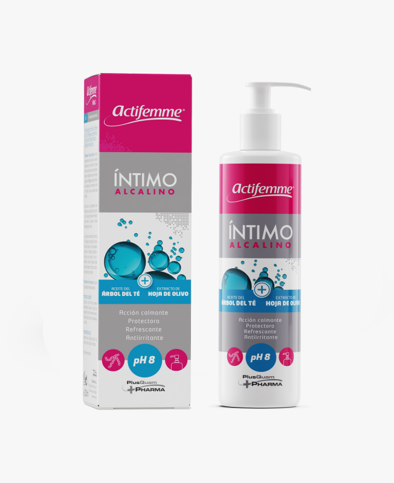

{kind=link}
Gel Íntimo PH8 | Actifemme® Gel Íntimo Alcalino| Higiene Íntima Femenina
- Referencia: 208107.9
- Actifemme® Íntimo alcalino con pH 8 es el gel ideal para la higiene de la zona íntima en caso de infección vaginal por hongos. Su pH alcalino evita la proliferación de la Cándida. Ayuda a calmar el picor, escozor e irritaciones de la piel en caso de Candidiasis. Acción calmante, protectora, refrescante y antiirritante.
- Formato: 200 ml con dosificador. (43.75 €/litro)
- 10,32 € Impuestos incluidos
DESCRIPCIÓN
Actifemme® Íntimo alcalino con pH 8, un gel de higiene íntima con 4 acciones principales: acción calmante, protectora, refrescante y antiirritante.
- Protege frente a agresiones de hongos y bacterias, evitando las irritaciones, mediante la incorporación del extracto de hoja de olivo.
- Ayuda a calmar y aliviar el picor por su contenido en ingredientes antiinflamatorios, antipruriginosos, descongestionantes, como el Aceite del Árbol del Té (Melaleuca alternifolia)
- Hidrata y ayuda a aliviar la sequedad, gracias a su composición rica en Aloe Vera, Bisabolol y Ácido Láctico.
- El pH alcalino (pH 8) evita la proliferación de la Cándida.
- Agradable sensación de frescor y confort durante todo el día
COMPOSICIÓN
Su fórmula contiene: Extracto de Hoja de Olivo (rico en Oleuropeína, polifenoles y flavonoides), Ácido Láctico, Bisabolol, Aloe Vera, Laureth-9 y Aceite del Árbol del Té (Melaleuca alternifolia)
MODO DE EMPLEO
Uso diario en caso de infección por hongos.
PRESENTACIÓN
Envase de 200 ml con dosificador
Sin parabenos · Sin colorantes · Sin alérgenos
Fabricado en España